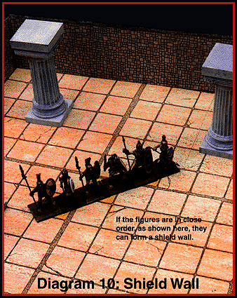

Shield Wall
In Chapter One, we described how figures can crowd together in close order, placing two
Man-sized creatures in a single space. If the creatures stay along an even line in
close order, they can form a shield wall by overlapping their shields. The
shields must be medium or kite shields. Fighting with a shield wall has several
benefits.

Table of Contents